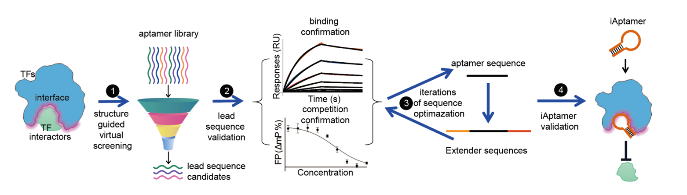
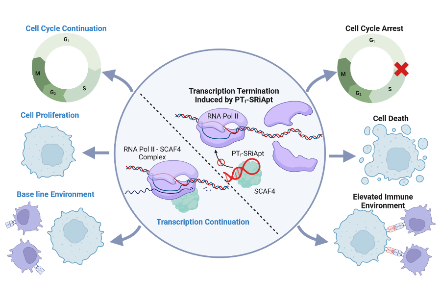

New Aptamer Screening for Targeting Protein Interactions
Transcription factors (TFs) are widely recognized as key drivers of disease initiation and progression, yet drugging them has long faced two major hurdles: the lack of conventional small-molecule binding pockets and delivery barriers caused by nuclear localization. To address this “undruggable” challenge, we developed an innovative aptamer-based intervention strategy. These nucleic acid molecules, with large molecular size and broad binding surfaces, can effectively block protein–protein interactions (PPIs) and show strong cellular penetration.
Building on this concept, we proposed a structure-guided inhibitory aptamer screening strategy (Blocker-SELEX) to rationally design inhibitory aptamers (iAptamers) targeting TF interaction interfaces. This work, titled “Blocker-SELEX: a structure-guided strategy for developing inhibitory aptamers disrupting undruggable transcription factor interactions,” was published in Nature Communications in 2024, with Tongqing Li (PhD candidate) and Xueying Liu (PhD) as co-first authors.
Using this in-house platform, we targeted aberrant interactions within the SCAF4/SCAF8-RNAP2 transcriptional regulatory complex in triple-negative breast cancer and developed the PTf-SRiApt aptamer. We found that it specifically disrupts SCAF4/SCAF8-RNAP2 interactions in cells, modulates downstream gene expression, significantly suppresses tumor cell proliferation, and further induces neoantigen production by perturbing RNA splicing to activate antitumor immune responses. This systematic study highlights the unique value of iAptamers for intervening in pathogenic TF interactions and provides new directions for nucleic acid drug development. The work, titled “PTf-SRiApt Targeting SCAF4-POLR2A Interaction Suppresses Tumor Growth and Promotes Antitumor Immunity in Triple-Negative Breast Cancer,” was published in Advanced Science in 2025, with Liyan Fei, Yichun Pan, and Jie Zhai as co-first authors.

